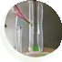
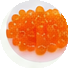
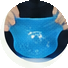
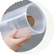
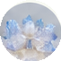
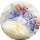
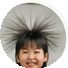

科学探究コースとは
実験をして「楽しかった」で終わりません。
科学探究コースは、実験を通して「なぜ？」「どうして？」を大切にする探究型の学びです。
実験をして終わりではなく、予想・実験・考察・発表という一連の流れを通して、
自分の考えを深め、言葉にして伝える力を育てます。
答えを覚えるだけではなく、答えを見つける力を。それがユニパスの科学探究コースです。
対象
小学4年生〜小学6年生
授業回数
月2回・1回90分
基本の流れ
予想 → 実験 → 考察 → 発表
科学探究コースで育てたい力
予測する力
「どうなるだろう？」を考える
根拠をもって仮説を立てる
確かめる力
実験を通して自分の予想を検証する
条件を変えたり、結果を比較したりする
考察する力
実験結果から「なぜ？」を考える
事実と自分の考えを区別しながら結論を導く
伝える力
自分の考えを整理して人に説明する
発表や質問を通して、考えを深める
科学探究4ステップ
「予想 → 実験 → 考察 → 発表」を基本の流れにしています。
予想
「どうなると思う？」
まず自分の考えを持つ。
実験
「本当にそうなる？」
実際に手を動かして確かめる。
考察
「なぜそうなった？」
結果から理由を考える。
発表
「自分の考えを伝える」
自分の考えを言葉にして伝える。
実験して終わりではない
科学探究は、実験をして「楽しかった」で終わりません。
授業では、こんな問いを大切にしています。
- なぜそうなるの？
- 他の方法ではどうなる？
- 予想と結果は同じだった？
- どうしてこの結果になった？
- 日常生活ではどこに使われている？
「なぜ？」を大切にすることで、自分で考える習慣を育てます。
実験テーマ例
「やってみたい！」から始まる、考える実験の数々。

DNA抽出
「生き物の中にある“設計図”を取り出してみよう」

人工イクラ
「液体がどうして粒になる？」

スライム
「さらさらの液体が、なぜ固まる？」

空気砲
「見えない空気は、本当に動いている？」

結晶づくり
「どうして結晶はできる？」
風船ロケット
「何の力でロケットは飛ぶ？」
紙の船
「紙でも、水に浮かぶ船が作れる？」
紫キャベツ液による液体調査
「身の回りの液体は、酸性？ アルカリ性？」

アイスクリームづくり
「冷たくするだけで、なぜ固まる？」

静電気実験
「目に見えない電気の正体は？」
・・など、楽しい実験がたくさん！
ご利用までの流れ
-
お問い合わせ
メールやLINE、Googleフォームよりお気軽にお問い合わせください。
-
初回体験（無料）
実際の実験授業に参加していただけます。楽しく学べる雰囲気をぜひ体感してください。
-
ご家庭でご検討ください
体験の様子を見て、じっくりご検討いただけます。強引な勧誘や営業はいたしません。
-
ご入会・月2回の授業スタート
ご入会後は月2回・1回90分の授業がスタートします。
こんなお子さまにおすすめ
- 理科や実験が好き
- 「なんで？」とよく質問する
- 工作やものづくりが好き
- 自分で試してみるのが好き
- 学校とは違う学びを体験させたい
- 子どもの好奇心を伸ばしたい
- 自分で考える力を育てたい
料金
科学探究コース
月2回コース（90分×2回）
※兄弟割引・複数コース割引あり（詳細はお問い合わせください）
よくある質問
Q科学探究コースは何人で授業をしますか？
少人数で行っています。具体的な人数については、現在ご案内できる情報が確定しておりませんので、お問い合わせください。
Q理科が苦手でも参加できますか？
もちろん大丈夫です。科学探究コースは「できる／できない」ではなく、「なぜ？」を考えることを大切にしています。理科が得意でないお子様もぜひご参加ください。
Q実験器具を持っていなくても大丈夫ですか？
教室で実験に必要な器具・材料をご用意します。詳しくはお問い合わせください。
Q個性別学習コースと両方受講できますか？
はい、可能です。学力面は個性別学習で、好奇心や思考力は科学探究コースで、両方を組み合わせて伸ばすこともできます。
Q体験授業はできますか？
はい。初回体験は無料で、実際の実験授業にご参加いただけます。
Q振替授業はできますか？
科学探究コースの振替につきましては、現在ご案内できる情報が確定しておりませんので、お問い合わせください。
まずは、体験してみませんか？
「どんな授業なの？」「うちの子に合うかな？」
そんな方も、まずはお気軽に体験してください。